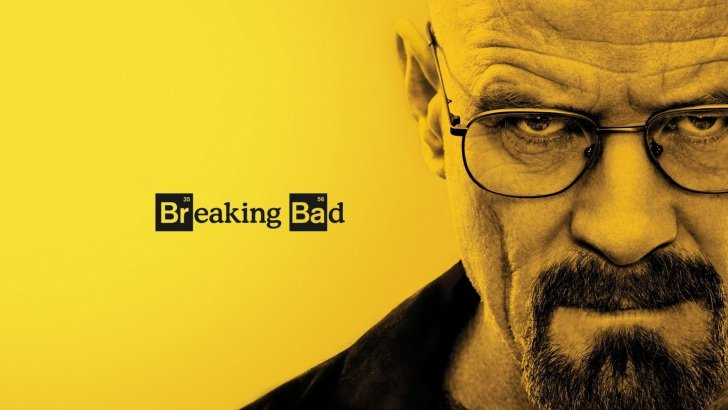

Den första serien som dök upp i mitt huvud var Breaking Bad. Därför är det den jag vill gå igenom först. Breaking Bad handlar om en lärare, som enligt honom själv lever ett ganska tråkigt liv, som får cancer och när han inser att han är döende så bestämmer han sig för att göra mer utav sitt liv. Han vänder sig till en av sina gamla elever som är missbrukare och tillsammns börjar de att tillverka droger. Det finns mängder med anledningar som gör att jag tycker att denna serien är så bra. Utan att gå in på för mycket mer detaljer så är storyn grundlig och genomtänkt, likaså karaktärerna. Och så här i efterhand kan man tydligt se att varje är skådespelare perfekt castad för sin roll.
